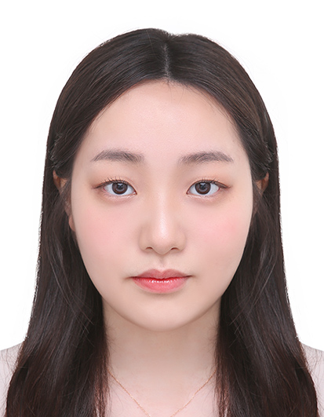
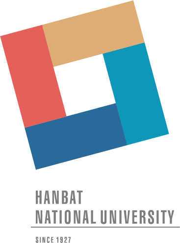
국립한밭대학교 컴퓨터공학과 · UST·KISTI 연구인턴
안녕하세요. 양자정보와 AI를 연구하는 김연주입니다.
흉부 X-ray 분류 연구를 시작으로, 영상의 주파수 특징을 골라 조절하는 방법을 설계하고 실험해 왔습니다.
저는 성능이 얼마나 좋아졌는지만큼이나 무엇이 그 차이를 만들었는지 이해하는 것을 중요하게 생각합니다.
현재는 UST·KISTI에서 AI 모델의 일부 계산을 양자 회로로 바꾸고, 기존 모델과 같은 조건에서 성능을 개선하는 연구를 진행하고 있습니다.
앞으로는 양자컴퓨팅을 AI의 학습과 추론에 활용하는 연구를 이어가고 싶습니다.
어떤 문제에서 양자 계산이 도움이 되는지 직접 구현하고 확인하며, 실제로 활용 가능한 기술을 연구하는 것이 제 목표입니다.
의료영상 AI → 양자정보·양자머신러닝
컴퓨터공학 전공 수업을 토대로 AI 모델 구현과 실험을 위한 연구 기반 마련. 2026학년도 1학기 기준 석차 2등/112명 · GPA 4.35/4.50.
흉부 X-ray 내부·외부 데이터의 분류 성능 비교. 한국전기전자학회 논문지 게재 승인(Accept).
블록 FFT 기반 선택적 주파수 증강 연구. 블록 크기·선택 대역·적용 확률에 따른 분류 성능 비교. 한국방송·미디어공학회 2025년 동계학술대회 논문 경진대회 최우수상 수상.
블록 FFT 증강 연구를 바탕으로 TFM 설계·구현 및 비교 실험·결과 분석 수행. Pattern Recognition 게재 승인(Accept).
UST·KISTI에서 AI 모델의 일부 연산을 양자 회로 활용 연구 진행 중. 대학원 진학 후 양자정보·양자머신러닝 연구 지속 목표.
Yeonju KimQUANTUM INFORMATION × AI
제1저자 · 공동 기여 · 2026.09 게재 승인
Pattern Recognition(Elsevier)
JCR Top 6.6% · IF 9.1
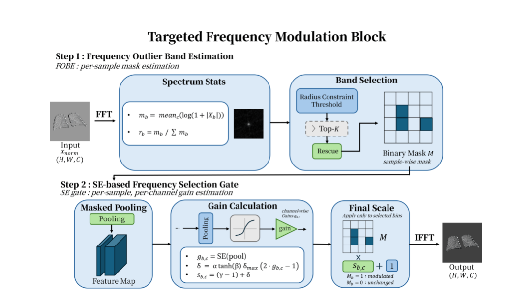
저널 지표: 2025 JCR · Engineering, Electrical & Electronic · JIF percentile 93.4 기준. 제1저자 · 공동 기여 표기.
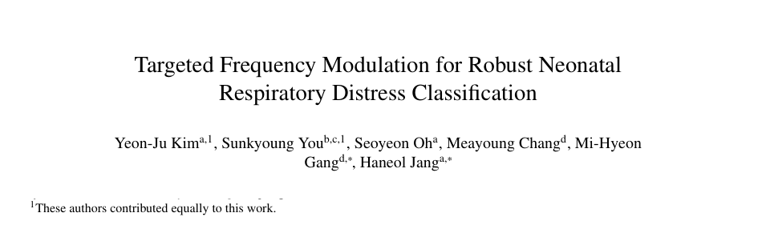
진행 중 · 2026.07–현재
양자정보·AI 연구인턴십 · 양자 회로를 이용한 의료영상 분류
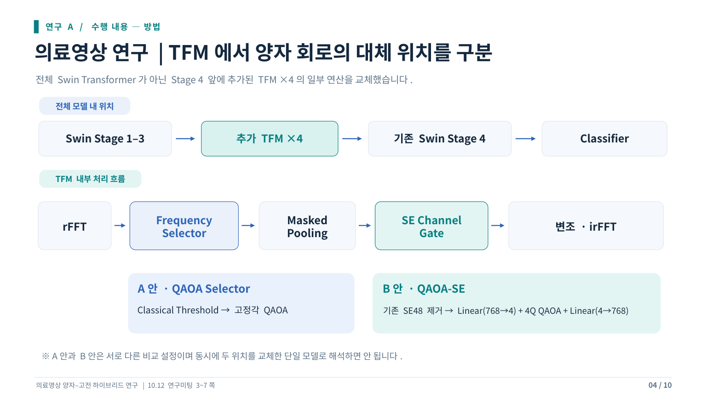
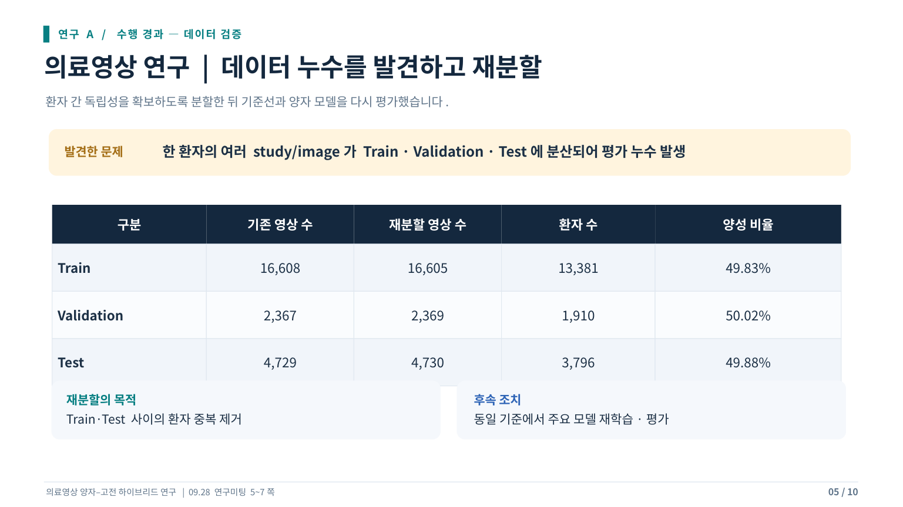
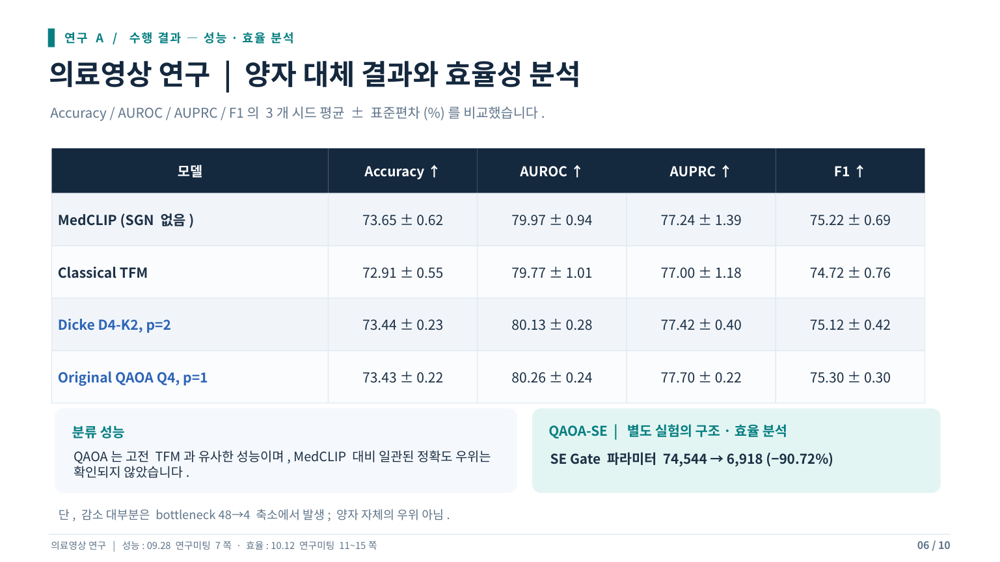
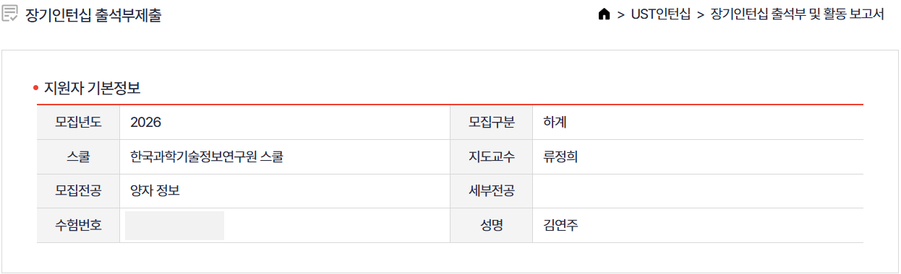
학술대회 논문 · 최우수상 · 2025.12
한국방송·미디어공학회 2025년 동계학술대회
대학생 및 고등학생 논문 경진대회
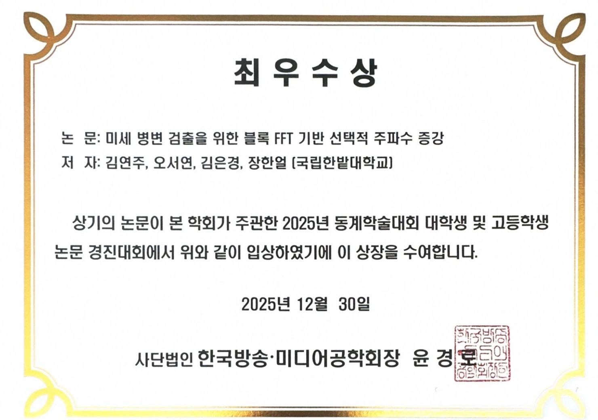
논문: 미세 병변 검출을 위한 블록 FFT 기반 선택적 주파수 증강.
공동제1저자 · 2025.09 게재
한국전기전자학회
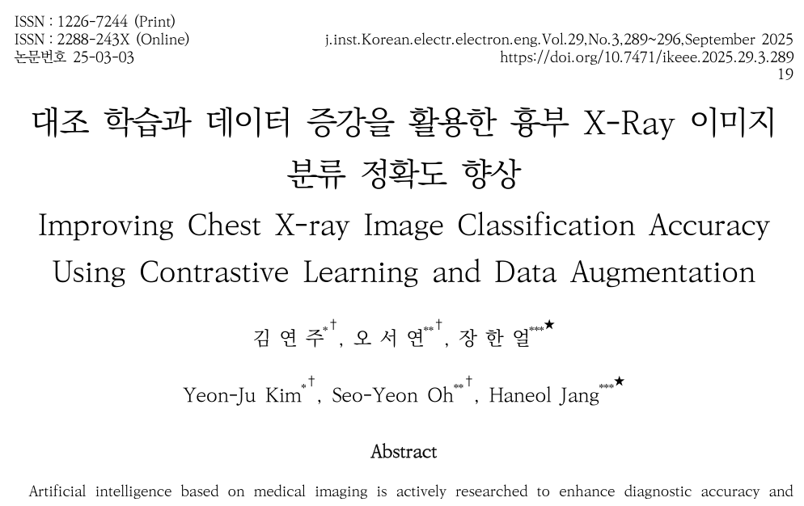
논문: 대조 학습과 데이터 증강을 활용한 흉부 X-Ray 이미지 분류 정확도 향상.
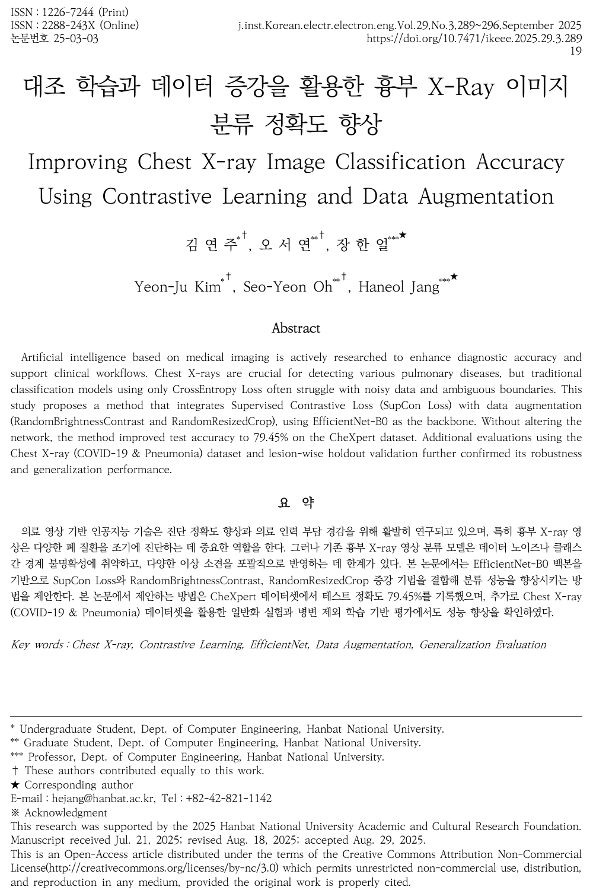
학생연구자 · 연구책임자 장한얼
국립한밭대학교 컴퓨터공학과 · 연구과제 참여
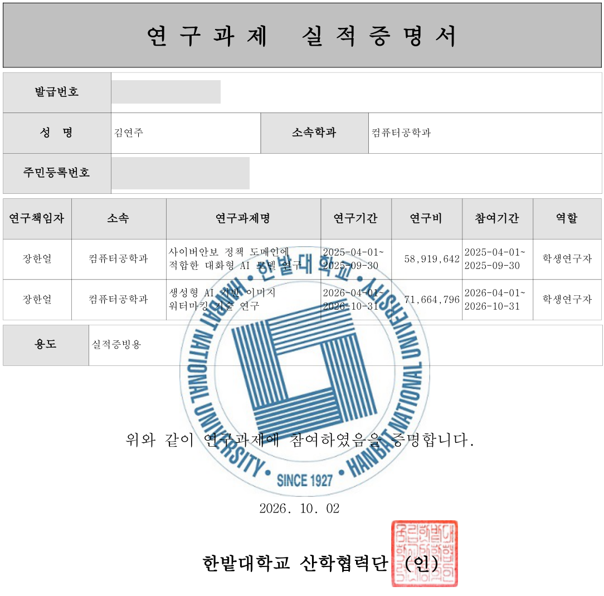
학생연구자 · 연구책임자 장한얼
국립한밭대학교 컴퓨터공학과 · 연구과제 참여
대회 수상 · 2025
AI 부문 · 3등 · 팀 4im
Fake Text Detection 주제로 팀 4im 참가. AI 부문 3등 수상.
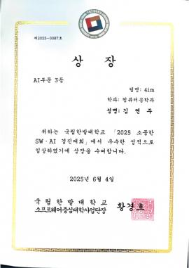
활동 증빙
논문 · 수상 · 연구 활동 · 성적
항목별 논문·수상·활동·성적 증빙 확인.
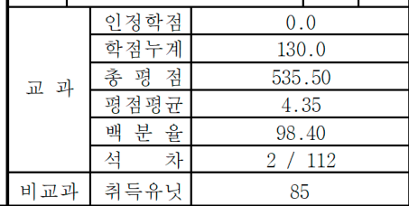
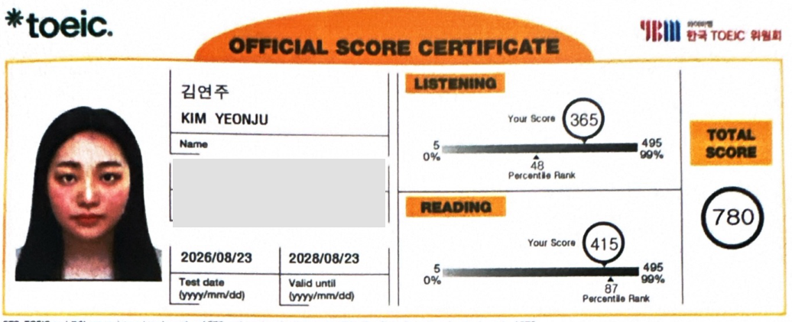